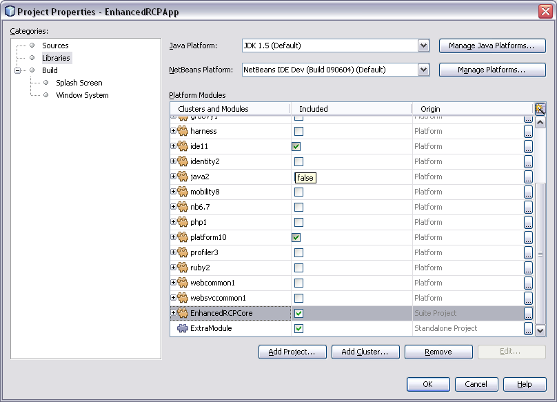
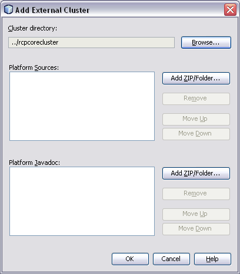

Apache NetBeans
Apache NetBeansI want to reuse some of my modules in several RCP applications. How to do it?
Note: These pages are being reviewed.
Assuming you are using version 6.8 or later, this is supported by the module development infrastructure:
-
Open Suite B in the IDE
-
Right-click on Suite B in the IDE
-
Click properties
-
Click libraries on the left of the suite properties dialog
-
Click 'Add project…' at the bottom of the suite properties dialog
-
Locate the directory containing the source code for Suite A
You can then select which modules from suite A you want to include in suite B.
Source: posting by Tom Wheeler
I want to use modules from update center in my RCP applications. How to do it?
It’s possible to use non-netbeans.org modules (yours or 3rd party) directly in your suite and perform this configuration via the GUI. To do this, go to the Properties of your suite project, Libraries tab:

If you have sources of modules you want to reuse, click Add Project… button and browse for the suite or standalone module project you want to add.
If you want to use 3rd party binary modules, just unpack them into a cluster folder somewhere on your disk. Preferably put the cluster under your suite’s root so that you can use relative paths, which makes setup in a team environment easier. Then click the Add Cluster… button and browse for the cluster folder:

You can also add sources and/or Javadoc for binary modules, just like for the whole NetBeans Platform.
Once projects and clusters are added to Libraries and checked, they behave just like part of the platform. They will appear in running platform application, will be included in binary distribution, modules from your suite can depend on them, etc.
I cannot use 6.7 or newer platform, what to do?
You can actually use older platform as long as you configure it to use newer harness (either via Tools → NetBeans Platforms in IDE or by specifying harness.dir) and you develop in new enough IDE.
If you cannot even use new harness and/or IDE, you have to use suite chaining, build your own platform and depend on it. See harness/README file for details. See also HowToReuseModules.
I want to use modules installed in my IDE in my RCP applications. How to do it?
First make sure that you have the IDE to install the downloaded plugins into shared directories. To do this go to Tool>Plugins then the Settings tab. Enable the check box at the bottom in the advance section. You might be warned about not having permission to save files into a location. Just make sure to run NetBeans as an administrator.
Now install the plugins you are interested in (using the Update center or manual install). They’ll be installed in a different place within the NetBeans platform depending on the classification of the plugin. Verify in the platform, you might have a new cluster named extra.
See also
-
Where is the Platform and how can I build it? for more details on how to add a custom platform for your application so the project is stand alone.
Using an Update Center for a Stand Alone Module
This was suggested as a patch but rejected (https://bz.apache.org/netbeans/show_bug.cgi?id=185283)
Add the following to the module’s build.xml file:
<target name="create-update-center" depends="harness.taskdefs, nbm">
<mkdir dir="${update.dir}"/>
<pathfileset id="updater.jar">
<path refid="cluster.path.id"/>
<filename name="modules/ext/updater.jar"/>
</pathfileset>
<makeupdatedesc desc="${update.dir}/updates.xml" distbase="."
automaticgrouping="true" uselicenseurl="${use.license.url.in.catalog}">
<fileset dir="./build">
<include name="*.nbm"/>
<include name="*.jar"/>
</fileset>
<updaterjar>
<resources refid="updater.jar"/>
</updaterjar>
</makeupdatedesc>
<!--Copy the files to the folder-->
<copy todir="${update.dir}">
<fileset dir="./build">
<include name="*.nbm"/>
<include name="*.jar"/>
</fileset>
</copy>
</target>This will create an update center for the stand alone module!
Note: Nothing magic about it. Just used the Netbeans task makeupdatedesc. Feel free to change the target name and change ./build with something smarter (I couldn’t find a pre-defined variable for that in the stand alone modules).
How to make global updates and updates into a custom target cluster/folder work in a NetBeans Platform application
-
Set
nbm.is.global=trueand/ornbm.target.cluster="yourtargetcluster"
-
Create an instance of
org.netbeans.spi.autoupdate.AutoupdateClusterCreatoras a service provider. Unless you have an appropriateAutoupdateClusterCreatorservice in your platform application, these properties have no effect and all updates will always be installed in the user dir! Unfortunately, this is poorly documented.
The easy way to create one such AutoupdateClusterCreator was for me to adapt the source file of the default IDE implementation (http://hg.netbeans.org/main/file/tip/updatecenters/src/org/netbeans/modules/updatecenters/resources/NetBeansClusterCreator.java ) to my own needs. Basically, all you have to do is replace one file name: “netbeans.clusters” must become “yourbrandingappname.clusters”. You’ll find the respective file in “install-dir/etc” of your application.